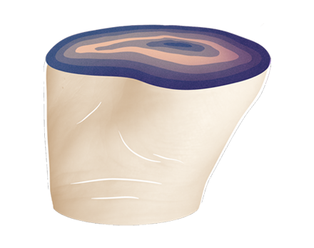
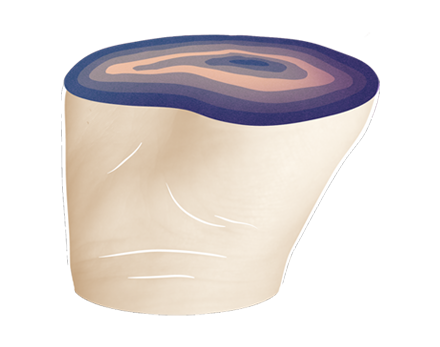

| When: | Where: | With: |
| 04/23 | 331 Club | tba |
| 04/23 | Midwest Music Fest in Winona | Lizzo |
| 05/03 | KNDS Block Party Fargo | tba |
"Needs is a perfectly crafted indie-pop gem. Lead singer Hurlow's light voice is wired to the dreamy five tracks on the EP, a deliberate mash-up of noise and art. It's the kind of thing the indie music blogosphere and world at large will eat up -- songs that recognize their own irony and shrug it off."
– City Pages"among the freshest tracks we've heard come from the Twin Cities in a while."
– The Current 
